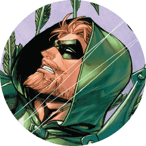

Este é um site com o propósito de trazer Notícias, histórias e alguns dos melhores personagens que estão dentro do Universpo Marvel e do Universo DC.
Personagens DC
Doninha

Conheça mais sobre O Doninha, personagem da DC Comics
Batman
Conheça mais sobre o Batman, protetor de Gotham City
Super-Choque

O jovem Virgil Hawkins ganha incríveis poderes eletromagnéticos após de ser exposto a um estranho gás.
Arqueiro
Conheça mais sobre O arqueiro Verde, personagem famoso do mundo DC
Personagens Marvel
Pantera

Conheça a história de T'Challa, o famoso Pantera Negra - Wakanda Forever
Loki

Conheça mais sobre Loki, famoso personagem da Marvel
venom

Conheça mais sobre Venon, famoso personagem da Marvel
Groot
Conheça mais sobre o Groot, famoso personagem fictício da Marvel